Te damos la bienvenida al equipo más cool de Nokia
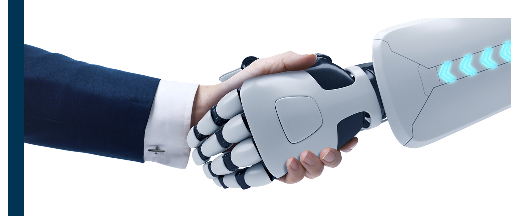
Automatización
Nacimos para optimizar y automatizar procesos, reduciendo costos y esfuerzos.
Tecnología
Somos curiosos por conocer e implementar las mejores tecnologías en nuestros proyectos.
Innovación
Nuestro espíritu de emprendimiento nos lleva a innovar constantemente e implementar nuevas ideas.
Introducción
Historia
El 25 de mayo de 2010 salió por primera vez al aire ZINA Workflow Managment, luego de muchos esfuerzos realizados durante casi dos años de trabajo. Este proyecto fue liderado por Cleri Inhauser, hoy Head of Strategy and Business Operations CO LAT Strategy Sales Analytics & Ops; Erickson Lima, actualmente Process Development Manager CO LAT Strategy Sales Analytics & Ops; y Juarez Bochi, antiguo Developer y ahora fuera de Nokia.
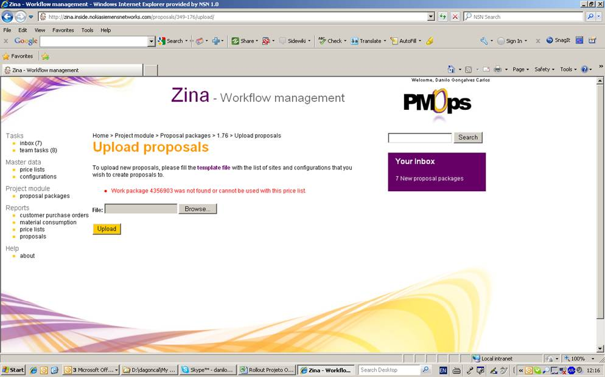
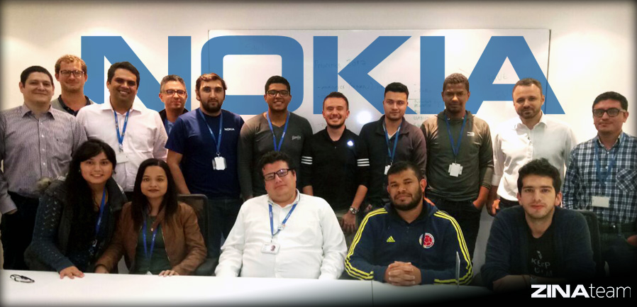
Inicialmente, el equipo de ZINA se conformó en Brasil. Sin embargo, al ir creciendo encontró mejores oportunidades de establacerse en Colombia, país en el que se encuentra desde 2014 y en el cual no ha parado de crecer desde entonces. Pero, ¿qué es ZINA? Es una herramienta web diseñada para facilitar los procesos de cualquier área de negocio dentro de Nokia reduciendo la complejidad en toda la cadena, simplificando la forma en la que se trabaja y mejorando la velocidad de ejecución.
Durante estos años, nuestro equipo ha alcanzado grandes logros y romper barreras en cuanto a los procesos de automatización que se vienen dando en el mundo. De hecho, ha sido pionero en esta carrera desarrollo de software y RPA (Automatización Robótica de Procesos). ZINA ha tenido un crecimiento continuo dentro de Nokia aumentando la prestación de sus servicios no solo en Latinoamérica sino en Estados Unidos, Japón y Reino Unido. Actualmente, se encuentra en negociaciones con India y varios países de Europa (junio de 2018).
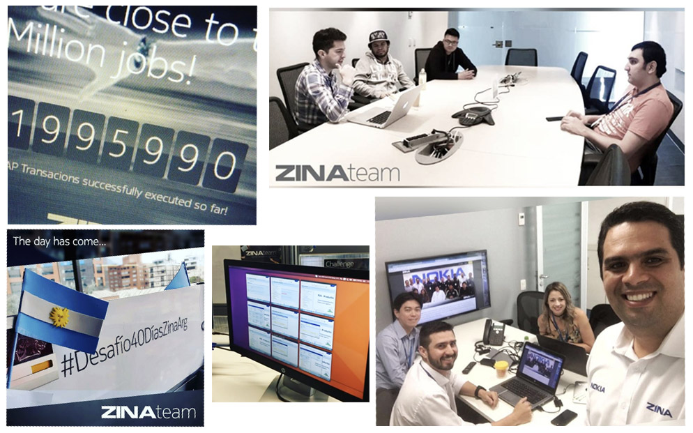
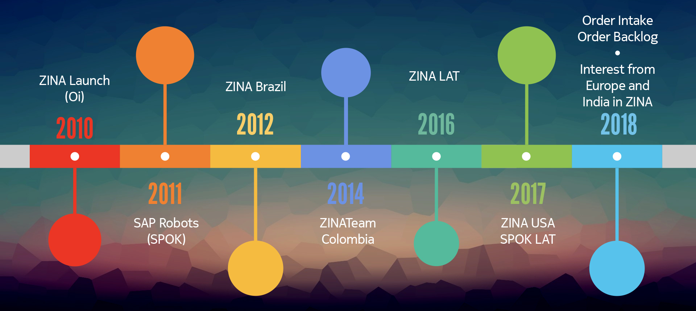
A futuro se espera que el equipo continúe con un crecimiento constante y siga ayudando a mejorar el desempeño de Nokia ahorrando costo y tiempo en la cadena de procesos a nivel global.
Información de marca de Nokia
Conocer todo sobre Nokia ayudará a tu acercamiento con la marca y a un mejor entendimiento de la misma. Por esto, en el enlace https://nokia.sharepoint.com/sites/brandstore/SitePages/home.aspx podrás encontrar toda la información relacionada con la compañía, específicamente:
Introducción a la marca Nokia
Guía sobre los lineamientos verbales y visuales de Nokia
Plantillas para crear documentos
Logos, fuentes y todos los materiales relacionados con la marca
Fotografías
Mejores prácticas y ejemplos
Accesos
Correo electrónico Nokia - Outlook 365
Para poder ingresar a tu correo de Nokia debes contar con los datos de acceso, estos te debieron ser enviados a tu correo personal previamente. Una vez los tengas, debes ir a https://nokia.ly/2tuP2bc y allí diligenciar el campo de correo electrónico (xxx.xxx.ext@nokia.com) y contraseña.
Luego, te aparecerá una ventana que te pedirá el código de autenticación. Ingrésalo e inmediatamente estarás dentro de tu cuenta de Outlook de Nokia.
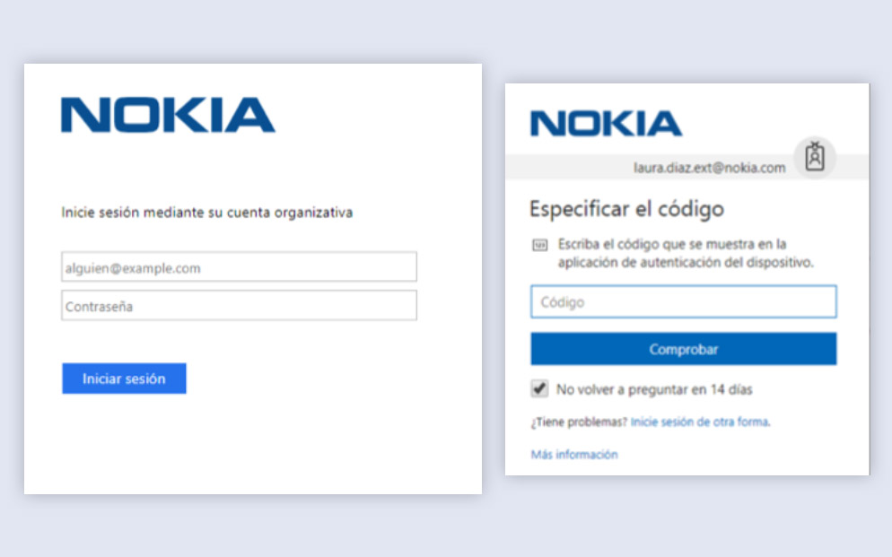
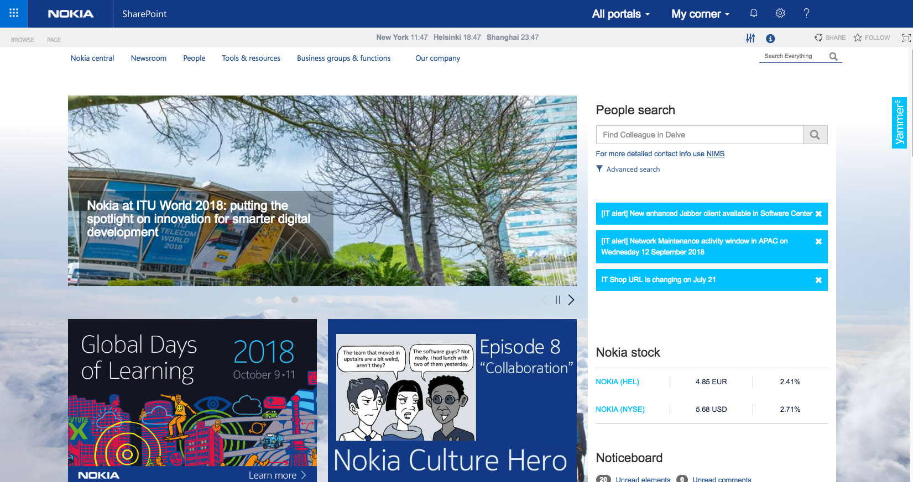
Intranet
La intranet de Nokia actualmente hace parte de las aplicaciones que ofrece la cuenta corporativa de Outlook. Para acceder a esta se deber ir a https://nokia.sharepoint.com. El usuario y contraseña es el mismo del correo electrónico. Allí podrás encontrar información actualizada sobre la compañía, sus herramientas y recursos, últimas noticias, etc.
Sharepoint Nokia - Outlook 365
SharePoint se usa en Nokia como un lugar seguro donde almacenar, organizar compartir información y acceder a esta desde cualquier dispositivo. ZINA cuenta con su propio espacio, en donde se almacenan documentos de gran importancia para el desarrollo de las actividades diarias del equipo. Para poder acceder o agregar información al SharePoint del equipo se debe pedir permiso a Laura Díaz o Erickson Lima y entrar desde el siguiente enlace: https://nokia.sharepoint.com/sites/zina.
Una vez en este sitio, encontrarás las siguientes carpetas: Administrative, Apps and Functionalities, Communications, Frontend (Design) e Infrastructure. La de mayor uso es Apps & Functionalities debido a que cuenta con toda la información sobre los clientes y aplicaciones que tiene ZINA. Allí la información se divide en:
Overview: documentos sobre una visión global del proyecto o aplicación.
User Manuals: manuales sobre el uso de las aplicaciones, hechos para información y uso de los usuarios de estas.
Development: información que atañe a la parte de desarrollo y que sirve de fuente para nuevos integrantes.
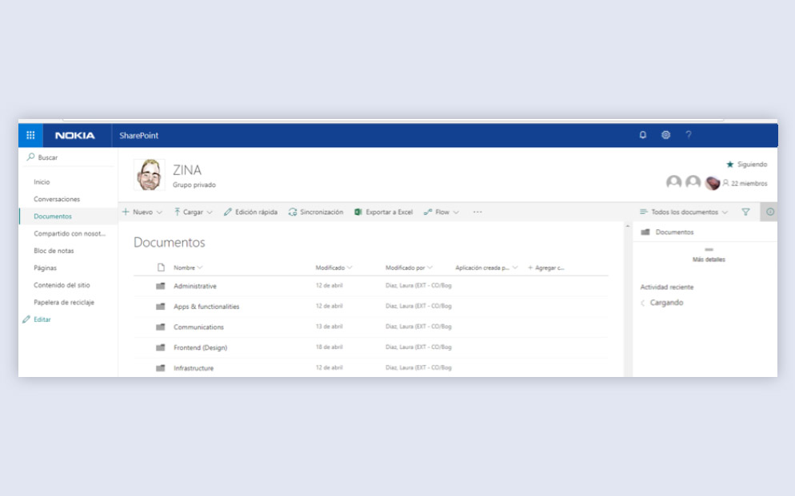
Webex
Webex es una herramienta que presta servicios de videoconferencia virtual. A través de esta es posible acceder a reuniones de otros o propiciarlas conectando personas de cualquier parte del mundo. Por esto, es bastante utilizado en Nokia ya que es una compañia a nivel global y en nuestro equipo ya que tenemos clientes en varios países.
Para conocer ser más sobre los servicios de llamadas o videos de nuestra compañía puedes acceder a los siguientes enlaces:
Para acceder a tu Webex debes entrar en la siguiente enlace https://nokia.ly/2yJX0T5. Allí, debes ingresar con tu correo de Nokia y contraseña, así como el código de autenticación.
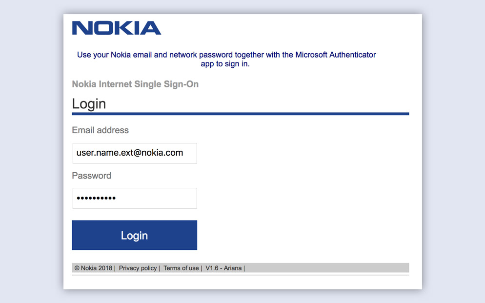
Grupo de Skype
Skype es un software que permite que comunicarse a través de llamadas, videollamadas y mensajes de texto usando un teléfono móvil, computadora o tableta de manera gratuita.
Nuestro equipo utiliza Skype como una herramienta de comunicación entre los integrantes del equipo. Por esto, contamos con un grupo principal llamado TL;DR (too long; didn’t read) - ZINA + Spok, en el cual se hablan temas cortos relacionados con el día a día laboral. Para tratar temas complejos es preferible hablar con los compañeros o con el superior (líder de equipo) de manera personal o a través de otro medio de comunicación como el teléfono o Webex.
Para pertenecer a este solo se necesita pedir acceso a Laura Díaz, Juan Pablo Medina, Erickson Lima o a cualquier miembro del equipo.
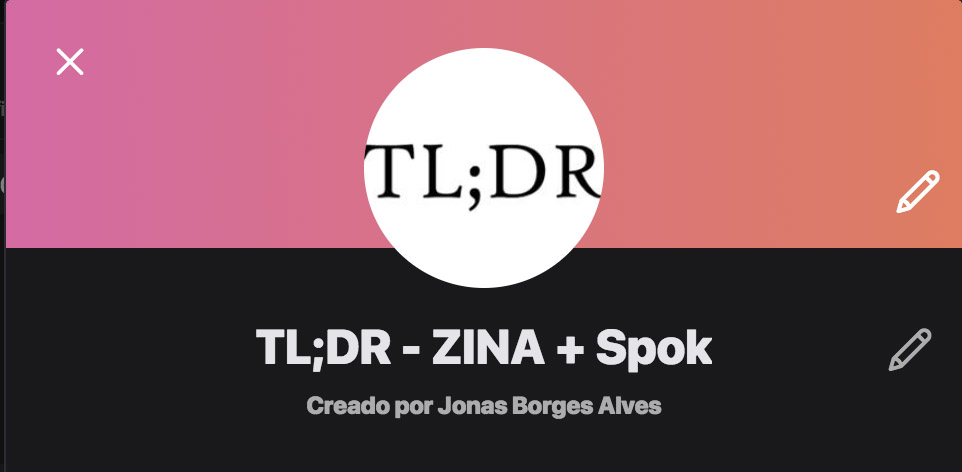
Grupo de WhatsApp
WhatsApp es una aplicación que permite enviar y recibir mensajes instantáneos de texto, video, audio, fotografía a través de un teléfono móvil (celular). Además, esta app no solo conecta dos personas a la vez sino que a través de los grupos deja que varias personas puedan estar en contacto al mismo tiempo.
ZINA cuenta con un grupo principal de WhatsApp para hablar temas relacionados con el trabajo, sobre todo aquellos de último momento o de gran relevancia para desarrollar las labores diarias. Este se llama Nokia - ZINA Team y para poder acceder solo se necesita pedir permiso a Laura Díaz, Juan Pablo Medina, Erickson Lima o Luis Sposito.
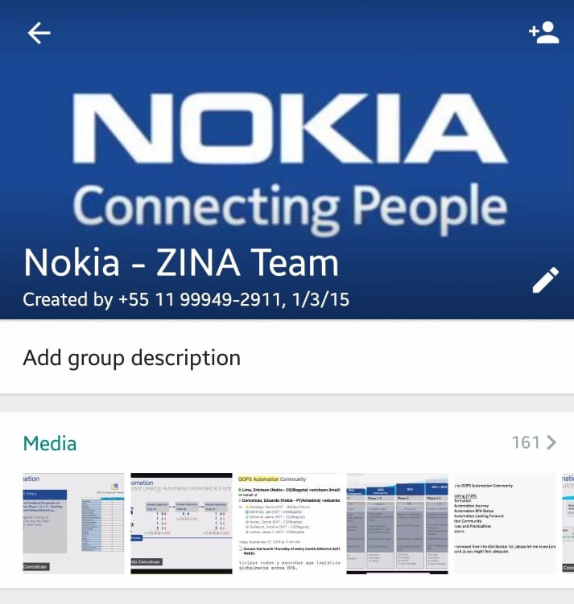
Beneficios
Pertenecer a nuestra compañia trae consigo beneficios para ti. A continuación podrás conocer algunos de ellos para que te familiarices y hagas uso de estos de manera correcta.
Trabajo desde casa
En ZINA puedes trabajar desde casa cuando quieras siempre y cuando lo solicites previamente, con al menos 18 horas de anterioridad. Para poder hacer uso de este recurso debes seguir los siguientes pasos:
Ingresa a la aplicación Outlook Web App a través de https://outlook.office365.com/owa/nokia.com/. Una vez allí, despliega el menú en la parte superior izquierda y selecciona Calendario (Calendar).
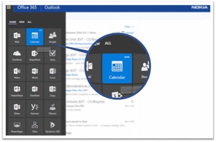
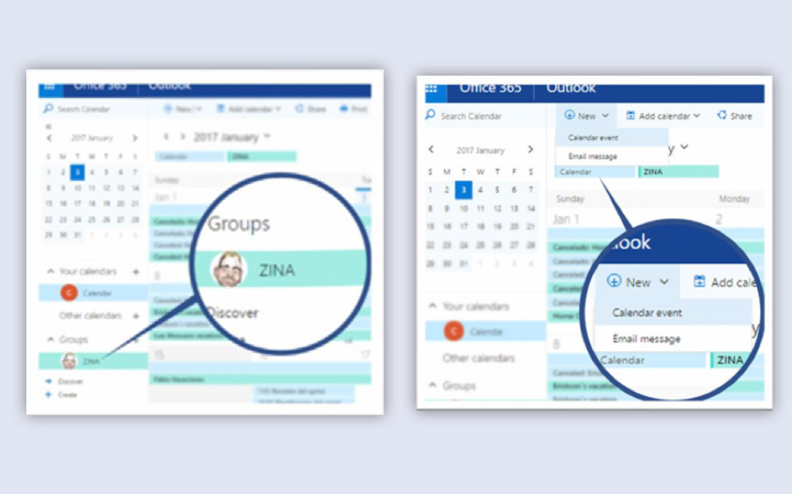
Trabajo desde casa
En la sección de grupos, asegúrate de seleccionar el grupo ZINA. Una vez hecho esto, podrás ver en el Calendario todos los eventos relacionados con nuestro equipo.
Luego de seleccionar el grupo, haz clic en la opción Nuevo (new) del menú superior y allí dentro selecciona Evento de calendario (calendar event).
Trabajo desde casa
Diligencia el formulario con tu nombre, evento y rango de fechas correspondiente. Además, marca la casilla Todo el día (all day) y asegúrate de seleccionar la opción Libre (free) en Mostrar como (show as).
Marca la casilla Enviar (send), de esta manera enviarás una invitación al grupo de manera que todos los integrantes puedan estar notificados de tu ausencia, reduciendo así el posible impacto de esta.
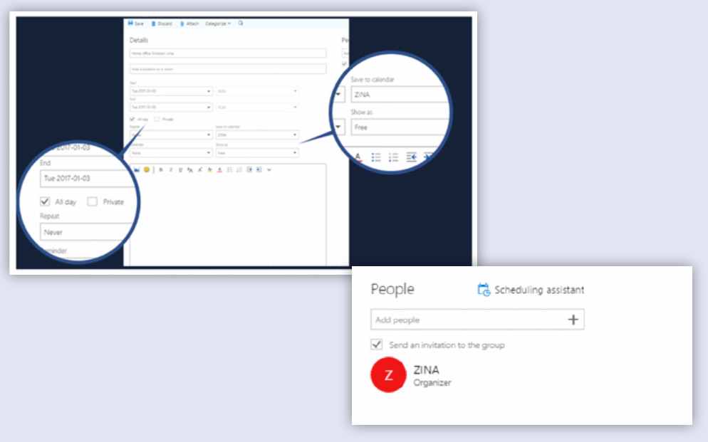
Trabajo desde casa
Una vez realizados estos pasos, haz clic en el botón Guardar (save) del menú superior. Luego de esto, podrás ver tu evento en el Calendario.
Recuerda que solicitar previamente la aprobación de los días de trabajo desde casa es obligatorio y nos permite tener un estado claro de los recursos con los que contamos diariamente para desempeñar nuestras labores.
Tiempo fuera de la oficina
Tomar espacios para atender otros asuntos fuera de la oficina es posible en ZINA team. A este procedimiento se le llama Out of Office y permite que puedas ausentarte en horas laborares para realizar alguna actividad o atender algún compromiso no relacionado con el trabajo. Algunas situaciones que cubre este permiso son citas médicas, horas de capacitación, estudios, etc.
Para poder acceder a este se debe pedir previamente permiso a Erickson Lima o a Luis Sposito. En el caso de responder también a un líder de equipo, se debe hablar primero con este para planear con anterioridad la viabilidad del ausentismo y cómo se va a recuperar el tiempo que se está solicitando.
Al igual que la solicitud de Home Office, el Out of Office se debe agregar en el Calendario de ZINA para que el equipo se entere de los detalles generales de la ausencia.
Libros, cursos en línea y entrenamientos
NokiaEDU es una plataforma de aprendizaje que nos proporciona la compañía a todos los empleados para que tengamos acceso a libros gratuitos, cursos en línea y entrenamientos que nos ayuden a mejorar nuestros conocimientos y a desarrollarnos tanto profesional como personalmente.
Wework es una red global de espacios de trabajo alrededor del mundo, que buscan fomentar la creatividad, el enfoque y las conexiones entre las empresas que lo conforman. Nuestro equipo tiene sus instalaciones en uno de estos edificios y por lo tanto todos podemos disfrutar de los beneficios que tiene ser parte de esta comunidad.
ZINA se encuentra ubicado en WeWork Usaquén en Bogotá (carrera 7 #116-50), segundo piso, oficina 2-109. A continuación verás algunos de los beneficios de trabajar en esta nueva propuesta de espacios de trabajo:
Además de contar con una oficina y un puesto de trabajo para ti, también podrás hacer uso de las áreas comunes en todos los pisos del edificio.
Puedes utilizar las salas de reunión en cualquier momento del día siempre y cuando hagas una reserva previa.
Tienes acceso a las zonas de juegos (minigolf, mesas de ping pong) y descanso, así como a las cocinas, bebidas calientes y dispensadores de cerveza.
Puedes participar de los diferentes eventos y actividades que se desarrollan semanalmente.
Cuentas con parqueadero para automóvil, moto y bicicleta.
Wework
Para hacer uso de todos los servicios es necesario que tu primer día de trabajo reclames tu tarjeta de acceso en el sexto piso. No olvides cuidarla ya que solo con esta podrás moverte con facilidad por el edificio y utilizar todo lo mencionado anteriormente. Cuando hayas hecho la activación de tu acceso a WeWork también recibirás una caja con información importante sobre este edificio.